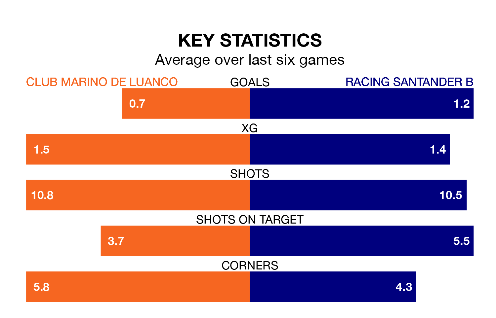

Racing Santander B face a challenge to maintain their high-scoring form away against a tight Club Marino de Luanco defence on Sunday.
With 42 goals in 30 games, Racing Santander B are the third-highest scorers in the Segunda División RFEF Group 1 ahead of the 4pm kick-off at Estadi Municipal de Miramar.
They face a Club Marino de Luanco side who have scored 23 in 30 matches, but conceded only 21 goals, putting them third among the league's tightest defences – only Ourense CF and Zamora CF have conceded fewer goals.
Racing Santander B are sixth in the table after 30 games, of which they have won 10 and drawn 12, earning 42 points.
Club Marino de Luanco are five places behind the away team in 11th, with seven wins and 15 draws putting them on 36 points.
The hosts are in mixed form in the Segunda División RFEF Group 1, with two wins and a draw from their last six games.
With a win and three draws over that period, Racing Santander B's form is slightly worse – they have taken six points from 18, compared to Club Marino de Luanco's seven.
In the last three years, Club Marino de Luanco and Racing Santander B have played each other on three occasions. Club Marino de Luanco won one of them and Racing Santander B the other.
Their last meeting was on December 3, when Racing Santander B won 2-0 at home.
Club Marino de Luanco's last match was on Sunday, a 1-1 draw against Real Avilés, with Miguel Cuesta Gutierrez getting the goal for Club Marino de Luanco.
Racing Santander B drew 0-0 with Zamora CF last time out, on April 6.
Updated: 11:20 (UTC), 09/04/24